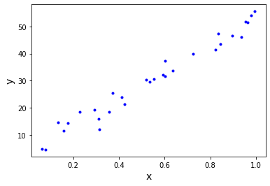
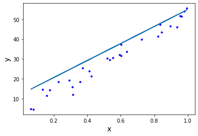
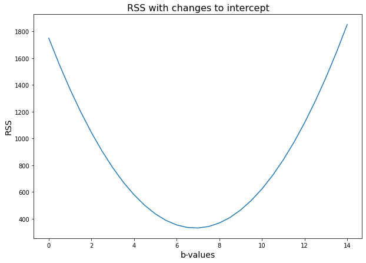
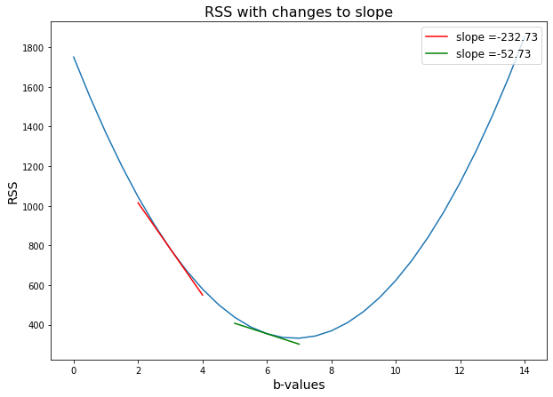
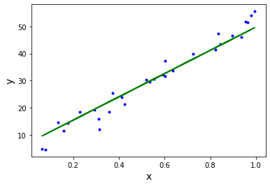

Gradient Descent: Step Sizes - Lab#
Introduction#
In this lab, you’ll practice applying gradient descent. As you know, gradient descent begins with an initial regression line and moves to a “best fit” regression line by changing values of \(m\) and \(b\) and evaluating the RSS. So far, we have illustrated this technique by changing the values of \(m\) and evaluating the RSS. In this lab, you will work through applying this technique by changing the value of \(b\) instead. Let’s get started.
Objectives#
You will be able to:
Use gradient descent to find the optimal parameters for a linear regression model
Describe how to use an RSS curve to find the optimal parameters for a linear regression model
Setting up our initial regression line#
Once again, we’ll take a look at revenues our data example, which looks like this:
import numpy as np
np.set_printoptions(formatter={'float_kind':'{:f}'.format})
import matplotlib.pyplot as plt
np.random.seed(225)
x = np.random.rand(30, 1).reshape(30)
y_randterm = np.random.normal(0,3,30)
y = 3+ 50* x + y_randterm
plt.plot(x, y, '.b')
plt.xlabel("x", fontsize=14)
plt.ylabel("y", fontsize=14);

We can start with some values for an initial not-so-accurate regression line, \(y = 43x + 12\).
def regression_formula(x):
return 12 + 43*x
np.random.seed(225)
x = np.random.rand(30,1).reshape(30)
y_randterm = np.random.normal(0,3,30)
y = 3+ 50* x + y_randterm
plt.plot(x, y, '.b')
plt.plot(x, regression_formula(x), '-')
plt.xlabel("x", fontsize=14)
plt.ylabel("y", fontsize=14)
plt.show()

def errors(x_values, y_values, m, b):
y_line = (b + m*x_values)
return (y_values - y_line)
def squared_errors(x_values, y_values, m, b):
return errors(x_values, y_values, m, b)**2
def residual_sum_squares(x_values, y_values, m, b):
return sum(squared_errors(x_values, y_values, m, b))
Now using the residual_sum_squares, function, we calculate the RSS to measure the accuracy of the regression line to our data. Let’s take another look at that function:
residual_sum_squares(x, y , 43, 12)
1117.8454014417434
Building a cost curve#
Now let’s use the residual_sum_squares function to build a cost curve. Keeping the \(m\) value fixed at \(43\), write a function called rss_values.
rss_valuespasses our dataset with thex_valuesandy_valuesarguments.It also takes a list of values of \(b\), and an initial \(m\) value as arguments.
It outputs a numpy array with a first column of
b_valuesandrss_values, with each key pointing to a list of the corresponding values.
Study Group Q:#
def rss_values(x_values, y_values, m, b_values):
b_min = min(b_values)
b_max = max(b_values)
table = np.zeros((((b_max-b_min)*2)+1,2))
for idx, val in enumerate(np.linspace(b_min, b_max, ((b_max-b_min)*2)+1)):
table[idx,0] = val
table[idx,1] = residual_sum_squares(x_values, y_values, 43, val)
return table
import sys
b_val = list(range(0, 15, 1))
b_val
[0, 1, 2, 3, 4, 5, 6, 7, 8, 9, 10, 11, 12, 13, 14]
bval_RSS = rss_values(x,y,43,b_val)
np.savetxt(sys.stdout, bval_RSS, '%16.2f')
0.00 1750.97
0.50 1552.09
1.00 1368.21
1.50 1199.33
2.00 1045.45
2.50 906.57
3.00 782.69
3.50 673.81
4.00 579.93
4.50 501.05
5.00 437.17
5.50 388.29
6.00 354.41
6.50 335.53
7.00 331.65
7.50 342.77
8.00 368.89
8.50 410.01
9.00 466.13
9.50 537.25
10.00 623.37
10.50 724.49
11.00 840.61
11.50 971.73
12.00 1117.85
12.50 1278.97
13.00 1455.08
13.50 1646.20
14.00 1852.32
def rss_values_jmi(x_values, y_values, m, b_values):
b_min = min(b_values)
b_max = max(b_values)
N_b_values = ((b_max-b_min)*2)+1
table = np.zeros((N_b_values,2))
for idx, val in enumerate(np.linspace(b_min, b_max, ((b_max-b_min)*2)+1)):
table[idx,0] = val
table[idx,1] = residual_sum_squares(x_values, y_values, 43, val)
return table
Now loop over a list with \(b\) values between 0 and 14 with steps of 0.5. Store it in bval_RSS. Print out the resulting table.
len(b_val),bval_RSS.shape
(15, (29, 2))
b_min = min(b_val)
b_max = max(b_val)
table_shape = (((b_max-b_min)*2)+1,2)
table_shape
(29, 2)
## jmi
N_b_values = ((b_max-b_min)*2)+1
table_shape = (N_b_values,2)
table_shape
(29, 2)
table = np.zeros(table_shape )
table
array([[0.000000, 0.000000],
[0.000000, 0.000000],
[0.000000, 0.000000],
[0.000000, 0.000000],
[0.000000, 0.000000],
[0.000000, 0.000000],
[0.000000, 0.000000],
[0.000000, 0.000000],
[0.000000, 0.000000],
[0.000000, 0.000000],
[0.000000, 0.000000],
[0.000000, 0.000000],
[0.000000, 0.000000],
[0.000000, 0.000000],
[0.000000, 0.000000],
[0.000000, 0.000000],
[0.000000, 0.000000],
[0.000000, 0.000000],
[0.000000, 0.000000],
[0.000000, 0.000000],
[0.000000, 0.000000],
[0.000000, 0.000000],
[0.000000, 0.000000],
[0.000000, 0.000000],
[0.000000, 0.000000],
[0.000000, 0.000000],
[0.000000, 0.000000],
[0.000000, 0.000000],
[0.000000, 0.000000]])
np.linspace(b_min,b_max, num = N_b_values)
array([0.000000, 0.500000, 1.000000, 1.500000, 2.000000, 2.500000,
3.000000, 3.500000, 4.000000, 4.500000, 5.000000, 5.500000,
6.000000, 6.500000, 7.000000, 7.500000, 8.000000, 8.500000,
9.000000, 9.500000, 10.000000, 10.500000, 11.000000, 11.500000,
12.000000, 12.500000, 13.000000, 13.500000, 14.000000])
np.linspace(b_min, b_max, ((b_max-b_min)*2)+1)#.shape
array([0.000000, 0.500000, 1.000000, 1.500000, 2.000000, 2.500000,
3.000000, 3.500000, 4.000000, 4.500000, 5.000000, 5.500000,
6.000000, 6.500000, 7.000000, 7.500000, 8.000000, 8.500000,
9.000000, 9.500000, 10.000000, 10.500000, 11.000000, 11.500000,
12.000000, 12.500000, 13.000000, 13.500000, 14.000000])
x_values = x
y_values = y
for idx, val in enumerate(np.linspace(b_min, b_max, N_b_values)):
table[idx,0] = val
table[idx,1] = residual_sum_squares(x_values, y_values, 43, val)
table
array([[0.000000, 1750.973324],
[0.500000, 1552.092994],
[1.000000, 1368.212664],
[1.500000, 1199.332334],
[2.000000, 1045.452004],
[2.500000, 906.571674],
[3.000000, 782.691343],
[3.500000, 673.811013],
[4.000000, 579.930683],
[4.500000, 501.050353],
[5.000000, 437.170023],
[5.500000, 388.289693],
[6.000000, 354.409363],
[6.500000, 335.529033],
[7.000000, 331.648703],
[7.500000, 342.768372],
[8.000000, 368.888042],
[8.500000, 410.007712],
[9.000000, 466.127382],
[9.500000, 537.247052],
[10.000000, 623.366722],
[10.500000, 724.486392],
[11.000000, 840.606062],
[11.500000, 971.725732],
[12.000000, 1117.845401],
[12.500000, 1278.965071],
[13.000000, 1455.084741],
[13.500000, 1646.204411],
[14.000000, 1852.324081]])
Plotly provides for us a table chart, and we can pass the values generated from our rss_values function to create a table.
And let’s plot this out using a a line chart.
plt.figure(figsize=(10,7))
plt.plot(bval_RSS[:,0], bval_RSS[:,1], '-')
plt.xlabel("b-values", fontsize=14)
plt.ylabel("RSS", fontsize=14)
plt.title("RSS with changes to intercept", fontsize=16);

Looking at the slope of our cost curve#
In this section, we’ll work up to building a gradient descent function that automatically changes our step size. To get you started, we’ll provide a function called slope_at that calculates the slope of the cost curve at a given point on the cost curve. Use the slope_at function for b-values 3 and 6.
def slope_at(x_values, y_values, m, b):
delta = .001
base_rss = residual_sum_squares(x_values, y_values, m, b)
delta_rss = residual_sum_squares(x_values, y_values, m, b + delta)
numerator = delta_rss - base_rss
slope = numerator/delta
return {'b': b, 'slope': slope}
slope_at(x, y, 43, 3)
{'b': 3, 'slope': -232.73066022784406}
slope_at(x, y, 43, 6)
{'b': 6, 'slope': -52.73066022772355}
So the slope_at function takes in our dataset, and returns the slope of the cost curve at that point. So the numbers -232.73 and -52.73 reflect the slopes at the cost curve when b is 3 and 6 respectively.
slope_3= slope_at(x, y, 43, 3)['slope']
slope_6 = slope_at(x, y, 43, 6)['slope']
x_3 = np.linspace(3-1, 3+1, 100)
x_6 = np.linspace(6-1, 6+1, 100)
rss_3 = residual_sum_squares(x, y, 43, 3)
rss_6 = residual_sum_squares(x, y, 43, 6)
tan_3 = rss_3+slope_3*(x_3-3)
tan_6 = rss_6+slope_6*(x_6-6)
plt.figure(figsize=(10,7))
plt.plot(bval_RSS[:,0], bval_RSS[:,1], '-')
plt.plot(x_3, tan_3, color = "red", label = "slope =" + str(round(slope_3,2)))
plt.plot(x_6, tan_6, color = "green", label = "slope =" + str(round(slope_6,2)))
plt.xlabel("b-values", fontsize=14)
plt.ylabel("RSS", fontsize=14)
plt.legend(loc='upper right', fontsize='large')
plt.title("RSS with changes to slope", fontsize=16);

As you can see, it seems pretty accurate. When the curve is steeper and downwards at \(b = 3\), the slope is around -232.73. And at \(b = 6\) with our cost curve becoming flatter, our slope is around -52.73.
Moving towards gradient descent#
Now that we are familiar with our slope_at function and how it calculates the slope of our cost curve at a given point, we can begin to use that function with our gradient descent procedure.
Remember that gradient descent works by starting at a regression line with values m, and b, which corresponds to a point on our cost curve. Then we alter our m or b value (here, the b value) by looking to the slope of the cost curve at that point. Then we look to the slope of the cost curve at the new b value to indicate the size and direction of the next step.
So now let’s write a function called updated_b. The function will tell us the step size and direction to move along our cost curve. The updated_b function takes as arguments an initial value of \(b\), a learning rate, and the slope of the cost curve at that value of \(m\). Its return value is the next value of b that it calculates.
def updated_b(b, learning_rate, cost_curve_slope):
change_to_b = -1 * learning_rate * cost_curve_slope
return change_to_b + b
This is what our function returns.
current_slope = slope_at(x, y, 43, 3)['slope']
updated_b(3, .01, current_slope)
# 5.327
5.3273066022784406
current_slope = slope_at(x, y, 43, 5.327)['slope']
updated_b(5.327, .01, current_slope)
# 6.258
6.2581066022854674
current_slope = slope_at(x, y, 43, 6.258)['slope']
updated_b(6.258, .01, current_slope)
# 6.6305
6.630506602279827
current_slope = slope_at(x, y, 43, 6.631)['slope']
updated_b(6.631, .01, current_slope)
# 6.780
6.779706602280413
Take a careful look at how we use the updated_b function. By using our updated value of \(b\) we are quickly converging towards an optimal value of \(b\).
Now let’s write another function called gradient_descent. The inputs of the function are x_values, y_values, steps, the m we are holding constant, the learning_rate, and the current_b that we are looking at. The steps arguments represent the number of steps the function will take before the function stops. We can get a sense of the return value in the cell below. It is a list of dictionaries, with each dictionary having a key of the current b value, the slope of the cost curve at that b value, and the rss at that b value.
def gradient_descent(x_values, y_values, steps, current_b, learning_rate, m):
cost_curve = []
for i in range(steps):
current_cost_slope = slope_at(x_values, y_values, m, current_b)['slope']
current_rss = residual_sum_squares(x_values, y_values, m, current_b)
cost_curve.append({'b': current_b, 'rss': round(current_rss,2), 'slope': round(current_cost_slope,2)})
current_b = updated_b(current_b, learning_rate, current_cost_slope)
return cost_curve
descent_steps = gradient_descent(x, y, 15, 0, learning_rate = .005, m = 43)
descent_steps
#[{'b': 0, 'rss': 1750.97, 'slope': -412.73},
# {'b': 2.063653301142949, 'rss': 1026.94, 'slope': -288.91},
# {'b': 3.5082106119386935, 'rss': 672.15, 'slope': -202.24},
# {'b': 4.519400729495828, 'rss': 498.29, 'slope': -141.57},
# {'b': 5.2272338117862205, 'rss': 413.1, 'slope': -99.1},
# {'b': 5.72271696938941, 'rss': 371.35, 'slope': -69.37},
# {'b': 6.06955517971187, 'rss': 350.88, 'slope': -48.56},
# {'b': 6.312341926937677, 'rss': 340.86, 'slope': -33.99},
# {'b': 6.482292649996282, 'rss': 335.94, 'slope': -23.79},
# {'b': 6.601258156136964, 'rss': 333.53, 'slope': -16.66},
# {'b': 6.684534010435641, 'rss': 332.35, 'slope': -11.66},
# {'b': 6.742827108444089, 'rss': 331.77, 'slope': -8.16},
# {'b': 6.7836322770506285, 'rss': 331.49, 'slope': -5.71},
# {'b': 6.812195895074922, 'rss': 331.35, 'slope': -4.0},
# {'b': 6.832190427692808, 'rss': 331.28, 'slope': -2.8}]
[{'b': 0, 'rss': 1750.97, 'slope': -412.73},
{'b': 2.063653301142949, 'rss': 1026.94, 'slope': -288.91},
{'b': 3.5082106119386935, 'rss': 672.15, 'slope': -202.24},
{'b': 4.519400729495828, 'rss': 498.29, 'slope': -141.57},
{'b': 5.2272338117862205, 'rss': 413.1, 'slope': -99.1},
{'b': 5.72271696938941, 'rss': 371.35, 'slope': -69.37},
{'b': 6.06955517971187, 'rss': 350.88, 'slope': -48.56},
{'b': 6.312341926937677, 'rss': 340.86, 'slope': -33.99},
{'b': 6.482292649996282, 'rss': 335.94, 'slope': -23.79},
{'b': 6.601258156136964, 'rss': 333.53, 'slope': -16.66},
{'b': 6.684534010435641, 'rss': 332.35, 'slope': -11.66},
{'b': 6.742827108444089, 'rss': 331.77, 'slope': -8.16},
{'b': 6.7836322770506285, 'rss': 331.49, 'slope': -5.71},
{'b': 6.812195895074922, 'rss': 331.35, 'slope': -4.0},
{'b': 6.832190427692808, 'rss': 331.28, 'slope': -2.8}]
Looking at our b-values, you get a pretty good idea of how our gradient descent function works. It starts far away with \(b = 0\), and the step size is relatively large, as is the slope of the cost curve. As the \(b\) value updates such that it approaches a minimum of the RSS, the slope of the cost curve and the size of each step both decrease.
Remember that each of these steps indicates a change in our regression line’s slope value towards a “fit” that more accurately matches our dataset. Let’s plot the final regression line as found before, with \(m=43\) and \(b=6.83\)
np.random.seed(225)
x = np.random.rand(30,1).reshape(30)
y_randterm = np.random.normal(0,3,30)
y = 3+ 50 * x + y_randterm
plt.plot(x, y, '.b')
plt.plot(x, (43*x + 6.83), '-', color="green")
plt.xlabel("x", fontsize=14)
plt.ylabel("y", fontsize=14);

As you can see, this final intercept value of around \(b=6.8\) better matches our data. Remember that the slope was kept constant. You can see that lifting the slope upwards could probably even lead to a better fit!
Summary#
In this lesson, we learned some more about gradient descent. We saw how gradient descent allows our function to improve to a regression line that better matches our data. We see how to change our regression line, by looking at the Residual Sum of Squares related to the current regression line. We update our regression line by looking at the rate of change of our RSS as we adjust our regression line in the right direction – that is, the slope of our cost curve. The larger the magnitude of our rate of change (or slope of our cost curve) the larger our step size. This way, we take larger steps the further away we are from our minimizing our RSS, and take smaller steps as we converge towards our minimum RSS.